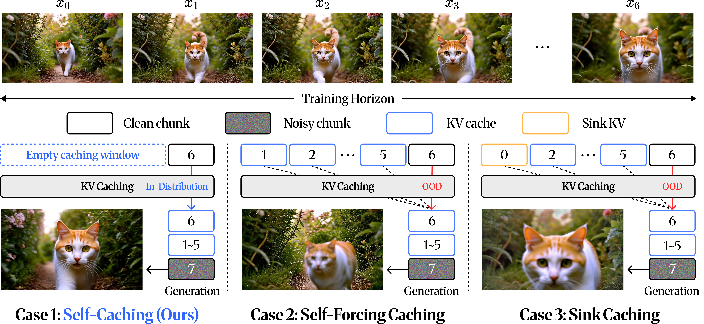
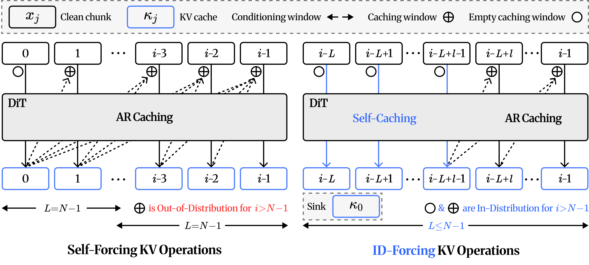

Abstract
Modern autoregressive (AR) video diffusion models excel at short-horizon video generation, yet generating long videos remains challenging due to drifting, where colors and textures shift, and motion dynamics decay. Existing works primarily rely on KV conditioning, which selects or modifies cached key-value (KV) entries to mitigate drifting. However, we observe that KV conditioning alone is insufficient as it assumes cached KV entries remain in-distribution. This assumption fails beyond the training horizon: nothing constrains the construction of KV entries during rollout, giving rise to the KV-provenance problem where cached entries themselves become out-of-distribution (OOD). To address this, we propose In-Distribution Forcing (ID-Forcing), a test-time framework that aligns both KV caching and KV conditioning with training configurations. Its key mechanism, self-caching, prevents OOD KV entries at their source. Each chunk is cached without attending to prior KV entry, keeping the rolling window exactly in-distribution. Consequently, ID-Forcing seamlessly extends short-horizon models to minute-scale video generation. Extensive evaluations show that our method remains competitive on standard video generation benchmark while substantially outperforming prior work in mitigating drifting, as validated by both our drift metrics and a user study.
Motivation
Prior works tackle drifting through KV conditioning, controlling which cached entries the model reads, but implicitly assumes the cached KV entries are themselves in-distribution. We find this assumption breaks: a KV entry also depends on the entries it attended to when it was cached, i.e., its provenance, and beyond the horizon every chunk is cached under a provenance never seen in training. We call this the KV-provenance problem. Since provenance is fixed at caching time, no conditioning policy can recover from it.

Figure 2. Same conditioning, different provenance.
Method

Figure 3. KV operations comparison.
ID-Forcing keeps test-time extrapolation within the training distribution by controlling both how KV entries are written and how they are read. It relies on one simple rule for each KV operation:
Level 1 – KV Caching: Self-Caching
Instead of caching each chunk on top of a rolling window the model never saw in training, we cache the earliest entries in the window attending only to themselves, and the rest autoregressively on top of them. Every KV entry is thus written under a provenance that training executed, preventing out-of-distribution entries at their source.
Level 2 – KV Conditioning: Exact Rolling Window
We always keep the first chunk κ0, which every training step conditions on and which is distributionally unique, together with the most recent entries, re-rotated so that temporal distances stay within the trained range. Since self-cached entries have no provenance to lose on eviction, the rolling window stays exactly in-distribution.
Gallery
ID-Forcing on diverse prompts, extrapolated well beyond the 5s training horizon.
30s
60s
120s
240s
Comparisons
ID-Forcing against Self-Forcing, Deep Forcing, MemRoPE, and Infinity-RoPE on identical prompts and seeds.
Prompt: A litter of playful golden retriever puppies popping their heads out of the snowy ground, ...
Prompt: A movie trailer featuring the adventures of a 30-year-old space man wearing a red wool knitted motorcycle helmet...
Conclusion
We introduce In-Distribution Forcing, a training-free framework for stable long-horizon video generation. By analyzing the key–value (KV) dynamics of autoregressive video models, we identify the KV-provenance problem, an out-of-distribution failure mode that originates at the caching level. To resolve it, we propose a two-level KV management rule. At the caching level, we apply self-caching. At the conditioning level, we strictly bound the window length (L ≤ N−1) while permanently keeping the first chunk κ0. Across durations, backbones (Self-Forcing and LongLive), and metrics, ID-Forcing is highly competitive. Most importantly, it suppresses the quality drift inherent to autoregressive models and keeps video dynamics stable over minute-scale generation.
BibTeX
@article{idforcing2026,
title = {In-Distribution Forcing for Long Video Generation at Test Time},
author = {Shin, Jeongwoo* and Choi, Youngyoon* and Jo, Sangwoo and Kim, Hyunmog and Choi, Sungjoon and Lee, Joonseok and Choi, Jaewoong and Choi, Jaemoo},
journal = {arXiv preprint arXiv:2610.03120},
year = {2026}
}